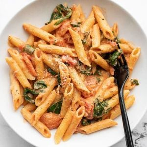

Pasta

Description
This page contains the recpie for Pasta
Ingredients
- 1 cup spinach
- 1 cup chopped tomatoes
- 1 cup chopped green chili
- 1 cup chopped garlic
- 1 cup chopped red pepper
- 1 cup chopped green pepper
- 1 cup spinach
- 1 cup chopped fresh cilantro
Instructions
- Preheat oven to 350 degrees F (175 degrees C).
-
Place spinach, chopped tomatoes, green chili, garlic, red pepper, green
pepper, spinach, cilantro in a bowl.
-
Place bowl in oven and cook, stirring occasionally, until spinach is
cooked through.
- Remove bowl from oven and let cool.
-
Place bowl in oven and cook, stirring occasionally, until spinach is
cooked through.